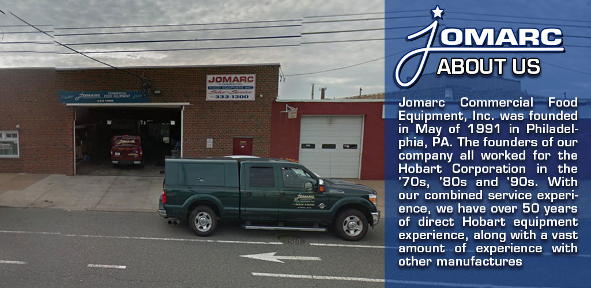

Jomarc Commercial Food Equipment
Sales & Service - Philadelphia & South Jersey Since 1991
Sales & Service - Philadelphia & South Jersey Since 1991
Quality refurbished commercial equipment at competitive prices. Each piece professionally restored and tested.
Specialized in commercial kitchen equipment repair and maintenance. Fast, reliable service when you need it most.
Serving Philadelphia and South Jersey since 1991. Trusted by restaurants, bakeries, and commercial kitchens.
Browse our inventory of refurbished commercial equipment
Premium refurbished Hobart commercial mixers. 60qt, 80qt, and 140qt models in stock.
Browse Mixers →Hobart-compatible agitators, bowls, attachments, and replacement parts available now.
Browse Parts →Pre-owned commercial dishwashers, slicers, food processors, and more for sale.
Browse Equipment →Our experienced technicians provide expert repair and maintenance for all types of commercial kitchen equipment. Specializing in Hobart mixers and commercial food processors.

Philadelphia Metro & South Jersey
Mon-Fri: 7:30AM-5:00PM
Weekend service available
Serving since 1991
30+ years experience
Hobart Equipment Experts
All commercial brands